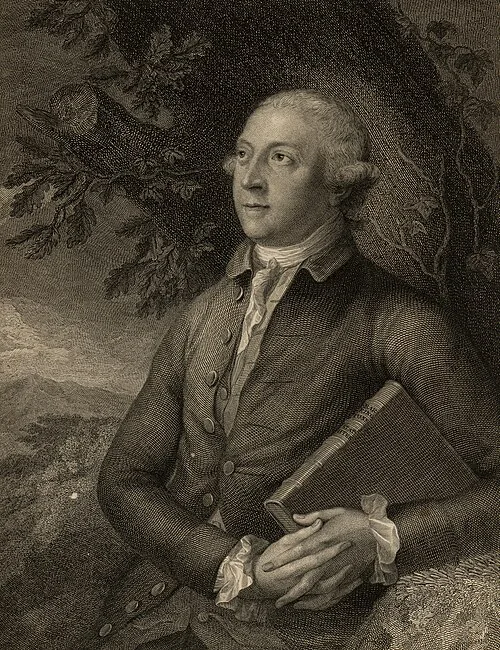

- Printed source
- Thomas Pennant, Synopsis of Quadrupeds (Chester: J. Monk, 1771), entry 13, “Blue,” pp. 24–25.
Bluebuck / Primary source
Thomas Pennant
Synopsis of Quadrupeds

Thomas PennantImage & authority record ↗
01 / Publication1771Chester: J. Monk
02 / SpecimenAmsterdamSkin reported as brought from the Cape of Good Hope
Original text
pp. 24–25 · descriptionA. with sharp-pointed, taper, arcuated horns bending backwards, marked with twenty prominent rings, but smooth towards their points, twenty inches long: ears sharp-pointed, above nine inches in length: larger than a buck: color, when alive, a fine blue; when dead, changes to a bluish grey, with a mixture of white: hairs long: beneath each eye a large white mark: belly white: tail seven inches long; the hairs at the end six inches. From a skin bought at Amsterdam1, brought from the Cape of Good Hope; where they are found, but far up the country. This is the species which, from the length of its hair and form of the horns, connects this genus with that of the Goat.
Edition
Further reading
- 01A. M. Husson and L. B. Holthuis, “The earliest figures of the Blaauwbok, Hippotragus leucophaeus (Pallas, 1766) and of the Greater Kudu, Tragelaphus strepsiceros (Pallas, 1766)” (1975), Zoologische Mededelingen 49(5): 57–63. ↗
Early descriptions and illustrations, including Pennant’s 1771 account. - 02L. C. Rookmaaker, The Zoological Exploration of Southern Africa 1650–1790 (1989), species account 49, pp. 300–301. ↗
Rotterdam and Brookfield: A. A. Balkema. Historical records of the bluebuck.
Reference
Cite this source
Thomas Pennant, Synopsis of Quadrupeds (Chester: J. Monk, 1771), entry 13, “Blue,” pp. 24–25.